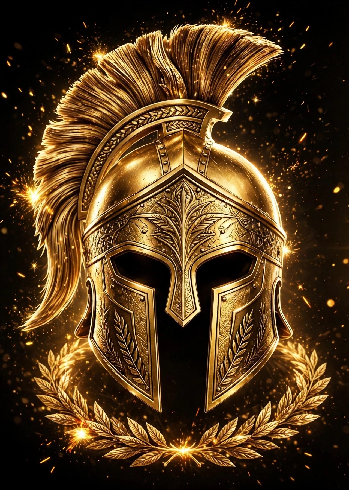

Hola, soy Jesús Eduardo y esta es mi página web oficial. Un espacio creado para compartir quién soy, lo que pienso y lo que me representa de forma positiva. Creo en el trabajo honesto, en la disciplina diaria y en el respeto mutuo. Aquí encontrarás una visión profesional, serena y transparente de mi persona. Gracias por visitar mi casa digital y por tu tiempo.
TITANES es más que un nombre, es una filosofía de fuerza, constancia y honor. Representa al guerrero que avanza con disciplina aun en la adversidad. Mi marca busca inspirar confianza, liderazgo y trabajo bien hecho. Es el reflejo de mi carácter: firme, respetuoso y comprometido. Quiero que al ver TITANES se entienda profesionalismo y palabra.
Pienso que el éxito se construye con constancia, no con atajos. Creo en prepararse, en escuchar y en actuar con responsabilidad. Pienso que respetar a los demás es respetarse a uno mismo. Valoro la puntualidad, la verdad y el esfuerzo diario. Mi pensamiento es positivo, práctico y orientado a soluciones.
Opino con respeto y con criterio profesional, sin imponer y sin ofender. Creo en el diálogo, en la tolerancia y en la búsqueda de acuerdos. Opino que todos merecemos ser escuchados y tratados con dignidad. Prefiero construir que criticar y sumar que dividir. Mi opinión busca aportar, no confrontar.
Mi logo es un casco espartano dorado sobre fondo negro, símbolo de estrategia y valentía. El dorado representa excelencia, valor y alto estándar profesional. El negro representa seriedad, elegancia y firmeza en el trabajo. Es una identidad limpia, poderosa y memorable. Habla por mí sin necesidad de palabras.
Mi historia está hecha de esfuerzo, aprendizaje y superación constante. He enfrentado retos que me han enseñado a ser más fuerte y más humilde. Cada experiencia, buena o difícil, me ha dejado una lección valiosa. No olvido de dónde vengo, porque eso me da dirección. Mi historia es mi base para lo que viene.
Conduzco mi vida con principios claros, respeto y gratitud. Valoro a mi familia, mi tiempo, mi salud y mi palabra empeñada. Busco equilibrio entre el trabajo productivo y el crecimiento personal. Vivo con orden, agradeciendo lo que tengo y trabajando por lo que sueño. Cada día lo tomo como una oportunidad de mejorar.
Mis metas son crecer profesionalmente con resultados comprobables y honestos. Consolidar TITANES como una marca seria, confiable y reconocida. Alcanzar estabilidad fruto del trabajo inteligente y constante. Convertirme en referente por cumplimiento y calidad. Trabajo cada día enfocado para lograrlo.
Mi propósito es aportar valor real con lo que hago y con lo que soy. Ayudar a otros a encontrar su propia fuerza y disciplina. Mantener siempre una conducta ética, profesional y respetuosa. No causar daño, sino construir, sumar y dejar huella positiva. Vivir con sentido y con utilidad para los demás.
Mi visión es verme como un profesional reconocido por su calidad, seriedad y palabra. Imagino a TITANES como marca de liderazgo, respeto y confianza. Me veo proyectando seguridad en cada proyecto donde participe. Visualizo un futuro donde mi esfuerzo de hoy sea mi orgullo de mañana. Trabajo diariamente con esa visión presente.
Para mí el valor es actuar con integridad aunque nadie esté mirando. Es cumplir lo que prometo, respetar mi tiempo y el de los demás. Es defender mis creencias con respeto, sin ofender a nadie. Es tener el coraje de decir la verdad con profesionalismo. Mis valores son firmes e innegociables.
En mi tiempo libre me gusta descansar con propósito, leer y reflexionar. Disfruto entrenar, ordenar ideas y pasar tiempo de calidad con los míos. Me gusta aprender algo nuevo que sume a mi crecimiento. Valoro la tranquilidad, la música y una buena conversación. Es mi espacio para recargar fuerza y claridad.
Me he formado con disciplina, curiosidad y constancia. Creo que el aprendizaje nunca termina y que siempre hay algo por mejorar. Me actualizo, investigo y practico lo que aprendo con seriedad. Cada curso, libro y experiencia suma a mi preparación. La educación es la base de mis oportunidades.
Tengo conocimientos en tecnología, gestión, análisis y comunicación efectiva. Soy autodidacta, me adapto rápido y me gusta entender a fondo las cosas. Me interesa la estadística, la ciencia y las herramientas digitales modernas. Aprendo con humildad y comparto con respeto. Me gusta convertir el conocimiento en resultados útiles.
Me apasiona la estadística porque muestra la realidad con objetividad y sin sesgos. Los datos bien analizados permiten tomar decisiones más inteligentes. Me gusta observar patrones, medir avances y aprender de los números. Es una ciencia que enseña a no dejarse llevar solo por emociones. La utilizo para planear y mejorar.
Respeto a la ciencia como motor de progreso, verdad y bienestar humano. Creo en el método, en la evidencia y en la curiosidad constante. La ciencia enseña a cuestionar con respeto y a buscar respuestas sólidas. Me inspira su capacidad para resolver problemas reales. La veo como aliada indispensable del futuro.
Considero que la política debe ser servicio, responsabilidad y resultados con respeto. Creo en el diálogo, en escuchar y en proponer soluciones viables. Mantengo una postura respetuosa ante todas las ideas y personas. Valoro la participación informada y la honestidad en el servicio. Me interesa una política que una y construya.
Me gusta leer porque es crecer, viajar y fortalecer la mente sin límites. Disfruto libros de liderazgo, historia, ciencia y desarrollo personal. La lectura me da calma, vocabulario y mejor criterio. Es parte de mi rutina y de mi formación continua. Siempre tengo un libro que me acompaña y me enseña.
Me gustaría crear proyectos que inspiren, generen empleo y aporten valor. Trabajar en lo que me apasiona con libertad, orden y profesionalismo. Llevar a TITANES a un nivel alto con presencia y respeto. Viajar para aprender de otras culturas de trabajo. Dejar un legado de esfuerzo honesto y bien hecho.
Me gustaría trabajar en un lugar profesional, organizado y con visión de futuro. Donde se valore el talento, el compromiso y el trabajo en equipo. Un espacio con respeto, retos constantes y oportunidades de crecimiento. Una oficina seria donde pueda aportar y aprender. Busco un equipo que comparta valores y metas.
En 10 años me veo consolidado, estable y con TITANES reconocido y respetado. Liderando proyectos importantes con un equipo profesional y leal. Con una vida equilibrada, familia sólida y metas cumplidas. Siendo referencia por trabajo serio, cumplimiento y confianza. Con la satisfacción de haber cumplido mi palabra empeñada.
Me expreso con respeto, claridad y profesionalismo, cuidando mis palabras. Prefiero hablar con hechos, con calma y con argumentos sólidos. Creo que expresarse bien es una muestra de educación y de valor. Escucho antes de responder y busco siempre sumar. Mi expresión busca construir puentes, no muros.
Visualizo mi oficina como un espacio limpio, ordenado, profesional y con identidad TITANES. Un lugar con luz, con dorado y negro, que transmita poder y serenidad. Donde cada detalle refleje disciplina, enfoque y calidad. Un espacio que inspire confianza a quien entra. Mi oficina será reflejo de mi forma de trabajar.
Ambiciono tranquilidad, respeto, estabilidad y crecimiento sostenido con propósito. No busco excesos, busco una vida digna, útil y con sentido. Ambiciono ser mejor persona y mejor profesional cada año. Que mi nombre sea sinónimo de confianza, calidad y palabra. Que mi trabajo hable siempre bien de mí.
Festejo la vida, el trabajo logrado y los avances con humildad y gratitud. Celebro en familia, con alegría sana, respeto y unión. Agradezco cada logro por pequeño que sea, porque es fruto del esfuerzo. Festejar para mí es compartir y reconocer el camino. Lo hago con respeto y con corazón agradecido.
Creo en Dios, en el trabajo honesto y en hacer el bien sin mirar a quién. Creo en la disciplina, en la palabra cumplida y en el respeto mutuo. Respeto todas las creencias y convivo con tolerancia y educación. Mis creencias me guían a actuar con ética y humildad. Son el centro que me mantiene firme.
Valoro las tradiciones porque nos conectan con nuestra historia y familia. Respeto las costumbres que unen, que enseñan y que fortalecen valores. Me gusta conservar lo bueno del pasado y adaptarlo con respeto al presente. Las tradiciones para mí son identidad, respeto y pertenencia. Las honro con orgullo y gratitud.
Valoro la cultura como expresión de conocimiento, arte, historia y respeto. Me interesa aprender de diferentes culturas con apertura y humildad. Creo que la cultura nos hace más empáticos, más preparados y más humanos. Disfruto conocer, leer y comprender otras formas de ver la vida. La cultura para mí es crecimiento constante.
© 2026 Jesús Eduardo - TITANES